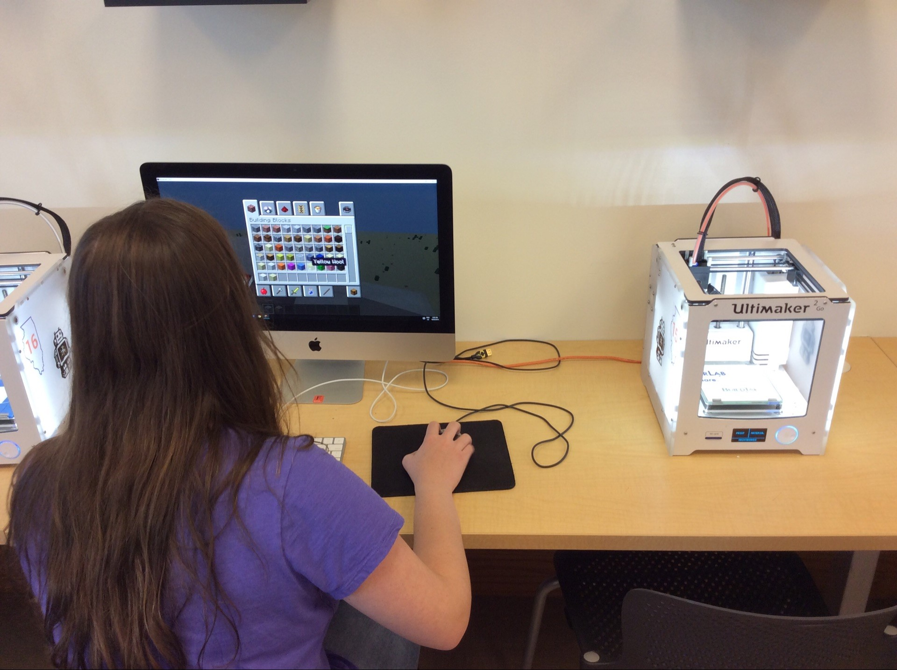
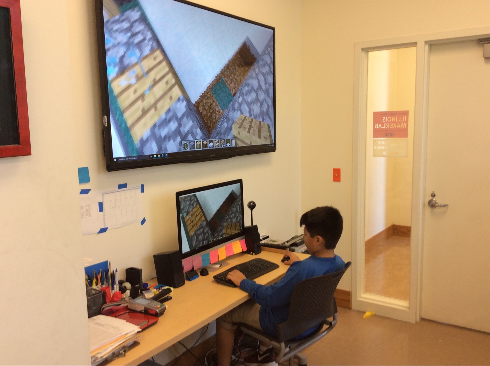
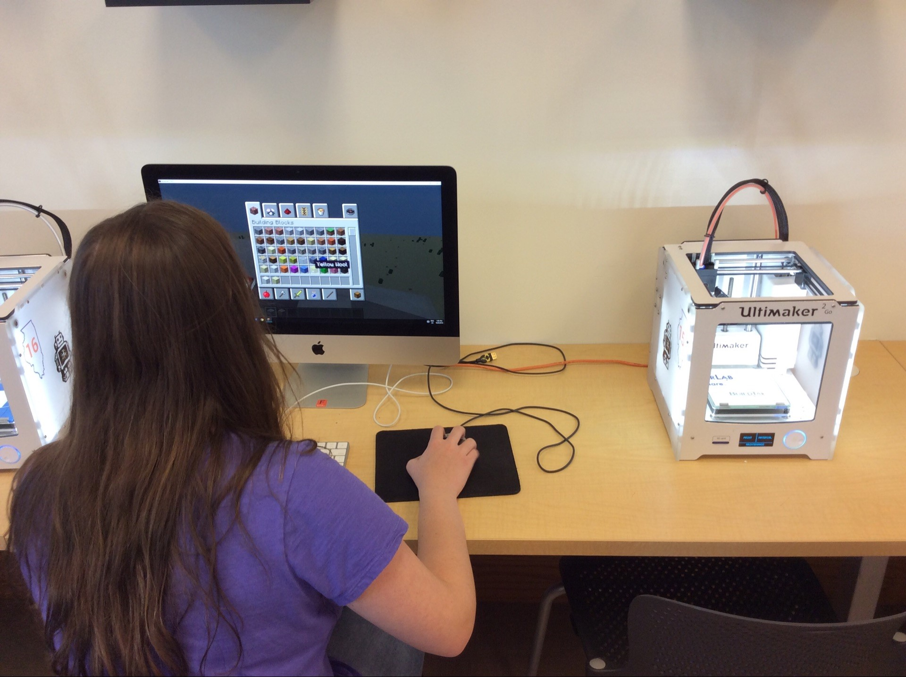
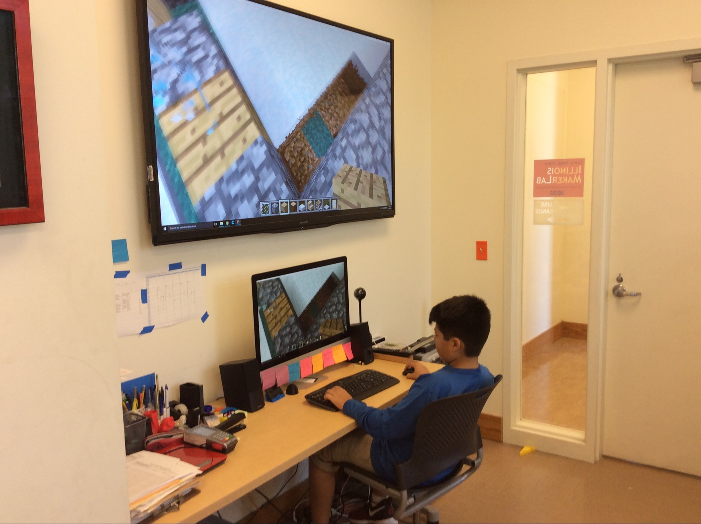
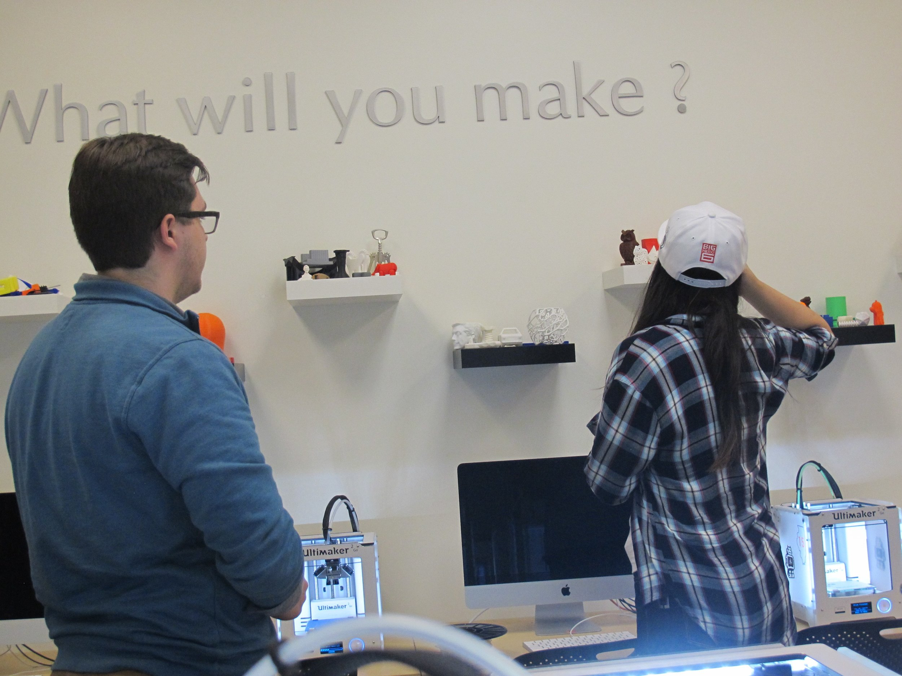
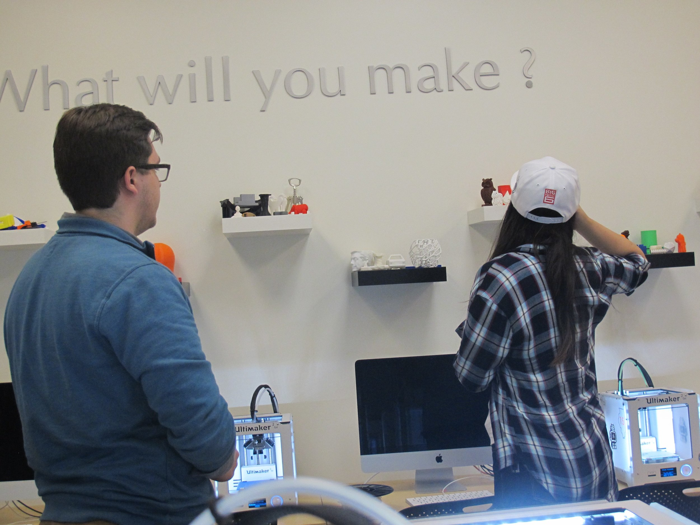
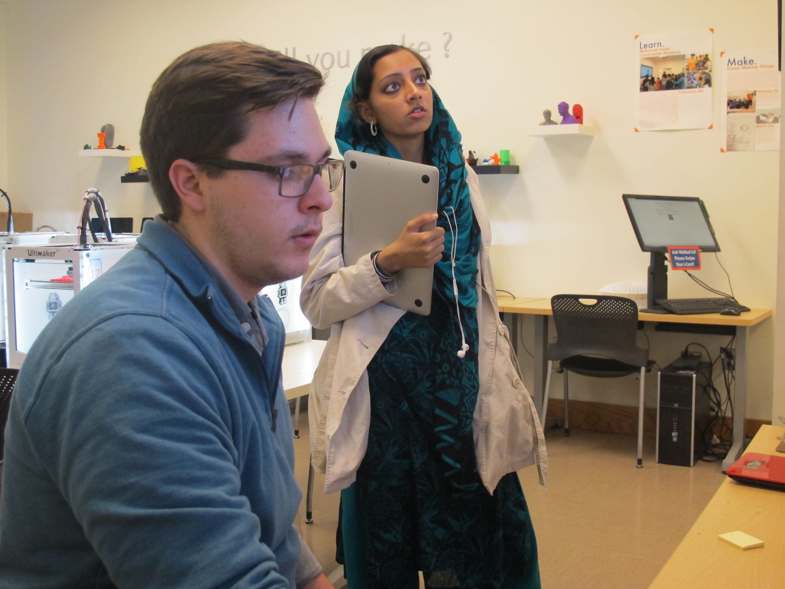
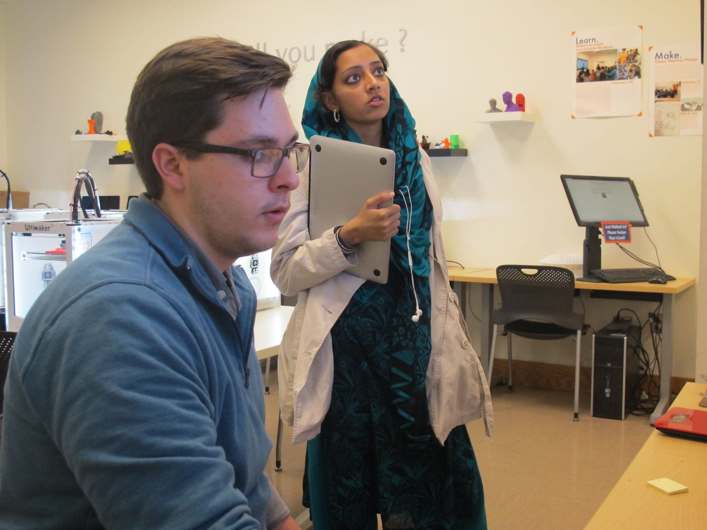

This Week of Making- Week43
Update on Max (our 3D printed man):
As of October 11th, we have 12 pieces left to print Max! The final prints include the remaining pieces of the torso and the legs. If you would like to help put Max together, and learn about 3d printing come to the BIF atrium on November 9th from 2:00-5:00pm!


The missing parts of Max's torso will be filled with the parts being printed in the photos on the right!
We have finished printing Max's arms and head.


To follow our progress on making Max, just search #printaperson on twitter or click the hash tag!
(New) Minecraft Workshops
Ever wanted to create your own virtual world? Then Minecraft is the game for you! Minecraft is what is known as a sandbox video game. A sandbox video game allows the player to create whatever they want and to make choices however they want. In addition, Minecraft allows players to create and build structures in a completely 3D generated world. This workshop for 10-18 year old kids teaches the basic of building in Minecraft and how to 3D print what they have built within the game! Sign up for the Minecraft or other workshops
 




TinkerCad Workshop:
We had a small turnout on rainy October 12th for our TinkerCad workshop. That doesn't mean that our participants had any less fun! In fact, this smaller turnout allowed for some more one on one time with our guru, Clark Csiski, leading the workshop. Hover over the pictures to see what some of our participants had to say about 3D printing.


 

 

This Week's Prints:
A lot of this weeks prints were various architecture prints. Check out the beginning stages of 5 different prints!


If you ever need to print something for your architecture class, the MakerLab is here to help. However, if you are just looking to print something small. Don't forget about our #freePrints Wednesdays from 1:00-4:00pm. Any print under 1 hour is completely free! And who doesn't like free? While your there, be sure to pick up a key chain. Our #makeroftheweek, I-Ning Chen has made several things during the #freeprintWednesdays.